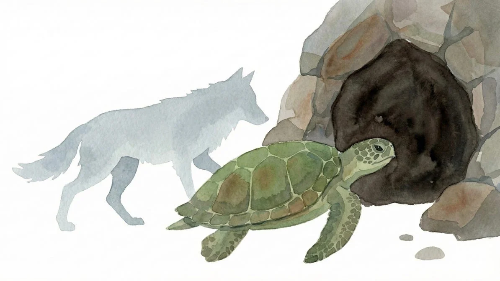

“기다려요,” 거북이가 말했어요. 늑대의 그림자가 차갑게 덮쳐왔지만, 목소리는 평온했어요. “당신 배를 채우는 것보다 더 좋은 제안이 있어요.”
[Wait,” said the turtle. The wolf’s shadow fell over it, cold, but its voice was calm. “I have a better offer than filling your stomach.”]
늑대는 코웃음을 쳤어요. “돌멩이 주제에 무슨 제안을 한다는 거지?”
[The wolf snorted. “What kind of offer can a rock make?”]
“보물을 드릴게요,” 거북이가 속삭였어요. “이 숲의 마지막 햇살이 담긴 곳을 알아요.”
[”I’ll give you a treasure,” the turtle whispered. “I know where the last ray of sunlight in this forest is kept.”]
마지막 햇살. 늑대는 잠시 생각했어요. 배고픔보다 탐욕이 더 컸죠. “안내해.”
[The last ray of sunlight. The wolf considered it. Its greed was greater than its hunger. “Lead the way.”]
거북이는 늑대를 어두운 동굴 입구로 데려갔어요. “저 아래에 있어요. 아주 밝고 따뜻하죠.”
[The turtle led the wolf to the entrance of a dark cave. “It’s down there. Very bright and very warm.”]
늑대는 망설이지 않고 어둠 속으로 뛰어들었어요.
[The wolf didn’t hesitate and jumped into the darkness.]
거북이는 떠나지 않고 기다렸어요. 한참 후, 동굴에서 늑대보다 훨씬 큰 무언가가 기어 나왔어요. 만족스러운 트림을 하며 거북이에게 고개를 끄덕였죠. “늘 고맙군.”
[The turtle didn’t leave; it waited. After a long while, something much larger than the wolf crawled out of the cave. It gave a satisfied burp and nodded at the turtle. “Always a pleasure.”]
거북이는 느릿느릿 제 갈 길을 갔어요.
[The turtle slowly went on its way.]